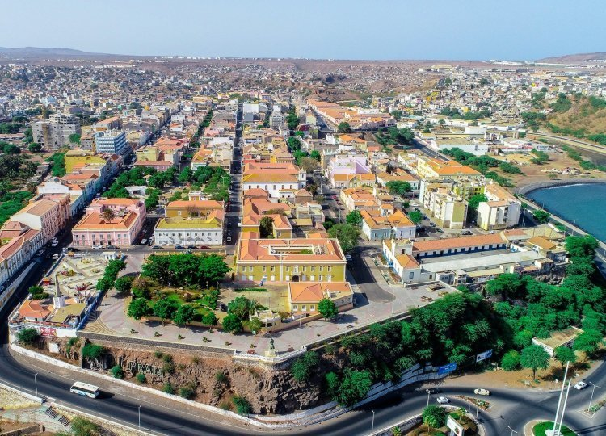

Um ditado sobre a minha terra
Quem vai à Praia, não volta sem saudade.
— Ditado popular cabo-verdiano

Situada na ilha de Santiago, a Praia é a capital de Cabo Verde e a maior cidade do país.
Para conhecer melhor a cidade, visita o portal institucional da Assembleia Municipal da Praia .
A Praia é conhecida por ser o centro político e administrativo de Cabo Verde, com uma mistura de cultura, história e vida urbana. O seu centro histórico, o Plateau, está classificado como Património Cultural Nacional desde 2013.
Uma visita ao Plateau é uma excelente opção para conhecer o centro histórico da cidade, as suas praças, edifícios antigos e o ambiente cultural.
O Plateau é o centro histórico da Praia, localizado numa zona elevada da cidade. É conhecido pelas suas ruas, arquitetura colonial e pelo movimento comercial. Os antigos cronistas portugueses chamavam-lhe Portus Plagae, nome latino que deu origem ao topónimo atual.
A cidade da Praia possui vários edifícios históricos que representam a sua identidade cultural e arquitetónica.
| Monumento | Construção/Século | Estilo | Classificação |
|---|---|---|---|
| Palácio Presidencial | Final do século XIX | Arquitetura civil colonial | Integrado no Centro Histórico do Plateau |
| Igreja Nossa Senhora da Graça | Século XIX | Classicista | Integrada no Centro Histórico do Plateau |
| Antiga Câmara Municipal | Século XIX | Clássico | Integrada no Centro Histórico do Plateau |
Quem vai à Praia, não volta sem saudade.
— Ditado popular cabo-verdiano
Conhece um local especial na Praia que ainda não aparece nesta página? Sugira-nos novos pontos de interesse e ajude outros visitantes a descobrir a cidade.